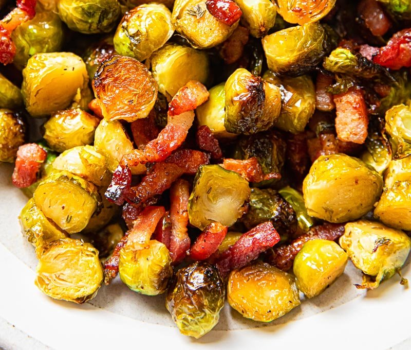

Bacon and Honey Roasted Brussels Sprouts

Ingredients
- 2lbs of brussels sprouts
- 1/2-1lb of bacon
- 2-3 springs thyme
- 1 tablespoon olive
- 1 tablespoon honey
- 1 tablespoon cider or balsamic vinegar
- And salt and pepper!
Instructions
- Preheat the oven to400F/200C. Cut the sprouts in half and
remove the hard stems at the bottom as well as the outer
leaves if damaged.
- On a large rimmed baking sheet toss together the sprouts,
olive oil, salt and pepper, thyme leaves and chopped bacon.
- Place the brussels sprouts on the baking sheet cut side down
for maximum caramelisation.
- Roast in the oven for 15 minutes.
- While that roasts, mix the honey and vinegar in small bowl.
- After 15 minutes take out the brussels and drizzle with the honey
and vinegar mix and stir to coat evenly.
- Put them back in the oven for 10 more minutes.
- Broil for 1 minute to get it crispy and for some extra browning.
Back to recipes